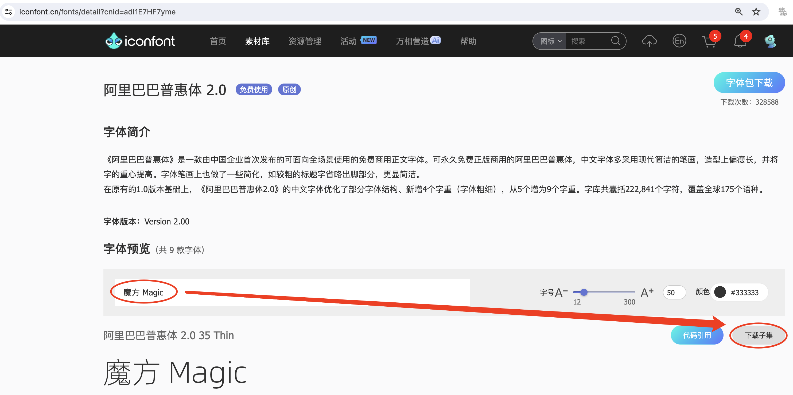

@file pnpm-workspace.yaml
packages:
- 'nuxt3-basic'
- 'nuxt3-element-plus'
- 'nuxt3-layout'
- 'nuxt3-tailwindcss'
- 'nuxt3-font'
- 'nuxt3-component'
- 'nuxt3-sitemap'
- 'nuxt3-sqlite'
- 'nuxt3-slug'
- 'nuxt3-server'@path nuxt3-basic
这是本来就有的 origin/main 分支。
github link
Create a new project
Prepare Directory
mkdir -p nuxt/nuxt3
nuxt3-basic 作为最基本的项目目录，后面会使用 git worktree 把不同分支的目录放在 nuxt3目录下，它们和 nuxt3-basic 在同级目录下。这样后面再有 nuxt4 的项目，也可以放在 nuxt 目录下，和 nuxt3 目录平行放置。
|
Create a new nuxt3 project
cd nuxt/nuxt3 pnpm create nuxt nuxt3-basic
> pnpm create nuxt nuxt3-basic
.d$b.
i$$A$$L .d$b
.$$F` `$$L.$$A$$.
j$$' `4$$:` `$$.
j$$' .4$: `$$.
j$$` .$$: `4$L
:$$:____.d$$: _____.:$$:
`4$$$$$$$$P` .i$$$$$$$$P`
ℹ Welcome to Nuxt! nuxi 11:13:07 AM
ℹ Creating a new project in nuxt3-basic. nuxi 11:13:07 AM
✔ Which package manager would you like to use?
pnpm
◐ Installing dependencies... nuxi 11:13:09 AM
WARN 9 deprecated subdependencies found: @types/parse-path@7.1.0, are-we-there-yet@2.0.0, gauge@3.0.2, glob@7.2.3, glob@8.1.0, inflight@1.0.6, node-domexception@1.0.0, npmlog@5.0.1, rimraf@3.0.2
Packages: +763
Progress: resolved 836, reused 757, downloaded 11, added 763, done
> nuxt-app@ postinstall /Users/swot/swot-learning/nuxt/nuxt3/nuxt3-basic
> nuxt prepare
✔ Types generated in .nuxt nuxi 11:13:21 AM
dependencies:
+ nuxt 3.17.4
+ vue 3.5.14
+ vue-router 4.5.1
Done in 11.6s
✔ Installation completed. nuxi 11:13:21 AM
✔ Initialize git repository?
Yes
ℹ Initializing git repository... nuxi 11:13:25 AM
hint: Using 'master' as the name for the initial branch. This default branch name
hint: is subject to change. To configure the initial branch name to use in all
hint: of your new repositories, which will suppress this warning, call:
hint:
hint: git config --global init.defaultBranch <name>
hint:
hint: Names commonly chosen instead of 'master' are 'main', 'trunk' and
hint: 'development'. The just-created branch can be renamed via this command:
hint:
hint: git branch -m <name>
Initialized empty Git repository in /Users/swot/swot-learning/nuxt/nuxt3/nuxt3-basic/.git/
✔ Would you like to install any of the official modules?
@nuxt/eslint – Project-aware, easy-to-use, extensible and future-proof ESLint integration, @nuxt/fonts – Add custom web fonts with performance in mind, @nuxt/icon –
Icon module for Nuxt with 200,000+ ready to use icons from Iconify, @nuxt/image – Add images with progressive processing, lazy-loading, resizing and providers
support, @nuxt/scripts – Add 3rd-party scripts without sacrificing performance, @nuxt/ui – The Intuitive UI Library powered by Reka UI and Tailwind CSS
ℹ Resolved @nuxt/icon, @nuxt/image, @nuxt/scripts, @nuxt/ui, @nuxt/fonts, @nuxt/eslint, adding modules... nuxi 11:16:40 AM
ℹ Installing @nuxt/icon@1.13.0, @nuxt/image@1.10.0, @nuxt/scripts@0.11.7, @nuxt/ui@3.1.2, @nuxt/fonts@0.11.4, @nuxt/eslint@1.4.1 as dependencies nuxi 11:16:40 AM
WARN 9 deprecated subdependencies found: @types/parse-path@7.1.0, are-we-there-yet@2.0.0, gauge@3.0.2, glob@7.2.3, glob@8.1.0, inflight@1.0.6, node-domexception@1.0.0, npmlog@5.0.1, rimraf@3.0.2
Packages: +271
+++++++++++++++++++++++++++++++++++++++++++++++++++++++++++++++++++++++++++++++++++++++++++++++++++++++++++++++++++++++++++++++++++++++++++++++++++++++++++++++++++
Progress: resolved 1129, reused 1022, downloaded 3, added 271, done
dependencies:
+ @nuxt/eslint 1.4.1
+ @nuxt/fonts 0.11.4
+ @nuxt/icon 1.13.0
+ @nuxt/image 1.10.0
+ @nuxt/scripts 0.11.7
+ @nuxt/ui 3.1.2
Done in 19.8s
WARN 9 deprecated subdependencies found: @types/parse-path@7.1.0, are-we-there-yet@2.0.0, gauge@3.0.2, glob@7.2.3, glob@8.1.0, inflight@1.0.6, node-domexception@1.0.0, npmlog@5.0.1, rimraf@3.0.2
Already up to date
Progress: resolved 1129, reused 1025, downloaded 0, added 0, done
dependencies:
+ @unhead/vue ^2.0.3
+ eslint ^9.0.0
+ typescript ^5.6.3
Done in 3s
ℹ Adding @nuxt/icon to the modules nuxi 11:17:03 AM
ℹ Adding @nuxt/image to the modules nuxi 11:17:03 AM
ℹ Adding @nuxt/scripts to the modules nuxi 11:17:03 AM
ℹ Adding @nuxt/ui to the modules nuxi 11:17:03 AM
ℹ Adding @nuxt/fonts to the modules nuxi 11:17:03 AM
ℹ Adding @nuxt/eslint to the modules nuxi 11:17:03 AM
✔ ESLint config file created at /Users/swot/swot-learning/nuxt/nuxt3/nuxt3-basic/eslint.config.mjs 11:17:05 AM
ℹ If you have .eslintrc or .eslintignore files, you might want to migrate them to the new config file 11:17:05 AM
ℹ Nuxt Icon server bundle mode is set to local 11:17:05 AM
✔ Types generated in nuxt3-basic/.nuxt nuxi 11:17:08 AM
nuxi 11:17:08 AM
✨ Nuxt project has been created with the v3 template. Next steps:
› cd nuxt3-basic nuxi 11:17:08 AM
› Start development server with pnpm run dev
install packages
I like pug, so add it.
pnpm add pug
@file nuxt.config.ts
// https://nuxt.com/docs/api/configuration/nuxt-config
export default defineNuxtConfig({
compatibilityDate: '2025-05-15',
devtools: { enabled: true },
modules: [
'@nuxt/icon',
'@nuxt/image',
'@nuxt/scripts',
'@nuxt/ui',
'@nuxt/fonts',
'@nuxt/eslint'
],
@others
});1 关闭默认的 google 访问设置
// 因为默认会使用 google 的字体和图标，但是 node.js 不会走代理，可能访问不到 google 网站。
// @nuxt/fonts 不使用 google fonts
fonts: {
provider: 'none', // 禁用默认字体提供商（如 Google Fonts）
},
// Nuxt UI 就不会再尝试加载 Google Fonts
ui: {
fonts: false
},@path nuxt3-layout
Add worktree nuxt3-layout
git worktree add -b nuxt3-layout ../nuxt3-layout origin/main git push -u origin nuxt3-layout
pug 语法介绍
模板使用了 pug 格式，优点是不用再写结束标签了。以缩进作为层级，类似于 python 语言。
安装 pug
pnpm add -D pug
@file app.vue
<template lang="pug">
NuxtLayout
NuxtPage
</template>@path nuxt3-element-plus
Add worktree nuxt3-element-plus
git worktree add -b nuxt3-element-plus ../nuxt3-element-plus git push -u origin nuxt3-element-plus
|
一定要注意是从哪个分支创建的，实在不放心就直接指定分支来源吧。 比如从 origin/nuxt3-layout 来创建新的 worktree git worktree add -b nuxt3-element-plus ../nuxt3-element-plus origin/nuxt3-layout |
Install
Video: 安装和使用Element Plus组件库 | 水哥澎湃
文档: 官网详细安装说明
pnpm i element-plus @element-plus/nuxt -D| -D 可以作为开发依赖，因为在 build 时会自动收集相关信息 |
@file nuxt.config.ts
// https://nuxt.com/docs/api/configuration/nuxt-config
export default defineNuxtConfig({
compatibilityDate: '2025-05-15',
devtools: { enabled: true },
modules: [
'@nuxt/icon',
'@nuxt/image',
'@nuxt/scripts',
'@nuxt/ui',
'@nuxt/fonts',
'@nuxt/eslint',
'@element-plus/nuxt' // new
],
elementPlus: { /** Options */ },
@others
});1 关闭默认的 google 访问设置
/* 因为默认会使用 google 的字体和图标，
但是 node.js 不会走代理，可能访问不到 google 网站
*/
// @nuxt/fonts 不使用 google fonts
fonts: {
provider: 'none', // 禁用默认字体提供商（如 Google Fonts）
},
// Nuxt UI 就不会再尝试加载 Google Fonts
ui: {
fonts: false
},@file pages/elementPlus.vue
template
<template lang="pug">
div
el-button(@click="ElMessage('hello')") button
ElButton(:icon="ElIconEditPen" type="success") button
LazyElButton(type="warning") lazy button
el-icon
ElIconDeleteFilled
el-date-picker(
v-model="date"
type="date"
placeholder="选择日期"
)
el-table.mb-1(:data="[]")
el-pagination(:total="100")
</template>script
<script setup lang="ts">
const date = ref('')
</script>element-plus I18N support
ConfigProvider 方式
@file app.vue
template
<template lang="pug">
NuxtLayout
div
//- 这一行应该可以放在 layout 文件中，现在只是一个测试而已
el-button.mb-2(@click="toggle") Switch Language
p
el-config-provider(:locale="locale")
NuxtPage
</template>script
<script setup lang="ts">
import zhCn from 'element-plus/es/locale/lang/zh-cn'
import en from 'element-plus/es/locale/lang/en'
const language = ref('zh-cn')
// eslint-disable-next-line @typescript-eslint/no-unused-vars
const locale = computed(() => (
language.value === 'zh-cn' ? zhCn : en))
// eslint-disable-next-line @typescript-eslint/no-unused-vars
const toggle = () => {
language.value = language.value === 'zh-cn' ? 'en' : 'zh-cn'
}
</script>报错或警告处理
dayjs/dayjs.min.js does not provide an export named 'default'
这是安装命令:
pnpm i element-plus @element-plus/nuxt -D
在安装完 element-plus 后报错:
[Bug Report] [All] Uncaught SyntaxError: The requested module '/_nuxt/node_modules/dayjs/dayjs.min.js?v=391d0c11' does not provide an export named 'default' (at picker2.mjs?v=391d0c11:2:8)
实际解决方法为: pnpm install dayjs
Extraneous non-props attributes (data-v-inspector) were passed to component
<NuxtLayout>
<!-- elementUI plus 支持中文 -->
<el-config-provider :locale="zhCn">
<NuxtPage />
</el-config-provider>
</NuxtLayout>如上面 element-plus 设置中文后，如果在页面(pages/)中再使用组件，则会报警告如下:
WARN [Vue warn]: Extraneous non-props attributes (data-v-inspector) were passed to component but could not be automatically inherited because component renders fragment or text or teleport root nodes. at <ElConfigProvider locale= { name: 'zh-cn', el:
解决方法：在 nuxt.config.ts 中临时禁用 componentInspector 功能
export default defineNuxtConfig({
devtools: {
enabled: true,
componentInspector: false
},
})@path nuxt3-tailwindcss
Add worktree nuxt3-tailwindcss
cd nuxt3-basic git worktree add -b nuxt3-tailwindcss ../nuxt3-tailwindcss origin/nuxt3-layout // 修改之后提交代码 git push -u origin nuxt3-tailwindcss
Some Urls
https://nuxt.com/modules/tailwindcss 目前我没有使用该 @nuxtjs/tailwindcss（集成的是 tailwindcss3），因为 NuxtUI 集成了 tailwindcss4，就不用再单独安装了。
Official Website: https://tailwindcss.com/blog
中文网: https://tailwind.nodejs.cn/docs/installation
中文网的版本默认是 4.1 2025-05-22 12:50:32
基于 tailwind 开发的 UI https://flowbite.com/
感觉很强
基于 tailwind 开发的 UI 特效库
https://inspira-ui.com/getting-started/installation
特别酷
Tailwind CSS Start to Mastery with 18 Project Examples 2024
https://www.bilibili.com/video/BV1f2zqYCE84
https://github.com/emmanuelbakare/Mastering-Tailwind-CSS-with-Project-Examples
感觉这个课程挺适合我的，坚持看完了，英语听力长了。
VSCode plugins
vscode install plugin: Tailwind CSS IntelliSense (vscode 的智能提示，需要配置如下)
.vscode/settings.json 中添加以下内容{
"files.associations": {
"*.css": "tailwindcss"
},
"editor.quickSuggestions": {
"strings": "on"
},
"tailwindCSS.classAttributes": ["class", "ui"],
"tailwindCSS.experimental.classRegex": [
["ui:\\s*{([^)]*)\\s*}", "(?:'|\"|`)([^']*)(?:'|\"|`)"]
]
}@file nuxt.config.ts
// https://nuxt.com/docs/api/configuration/nuxt-config
export default defineNuxtConfig({
compatibilityDate: '2025-05-15',
devtools: { enabled: true },
modules: [
'@nuxt/icon',
'@nuxt/image',
'@nuxt/scripts',
'@nuxt/ui', // new
'@nuxt/fonts',
'@nuxt/eslint',
],
css: ['~/assets/css/main.css'], // new
@others
})1 关闭默认的 google 访问设置
/* 因为默认会使用 google 的字体和图标，
但是 node.js 不会走代理，可能访问不到 google 网站
*/
// @nuxt/fonts 不使用 google fonts
fonts: {
provider: 'none', // 禁用默认字体提供商（如 Google Fonts）
},
ui: {
// Nuxt UI 就不会再尝试加载 Google Fonts
fonts: false,
},@file assets/css/main.css
@import "tailwindcss";
@import "@nuxt/ui";@file pages/easy_example.vue
<template lang="pug">
div(class="text-3xl text-white bg-green-500 p-6 rounded shadow")
| Tailwind 样式现在已生效
</template>@path nuxt3-font
Add worktree nuxt3-font
cd nuxt3-basic git worktree add -b nuxt3-font ../nuxt3-font origin/nuxt3-layout // 修改之后提交代码 git push -u origin nuxt3-font
Nuxt3 字体引用《阿里巴巴普惠体》
安装字体
-
字体最好使用 .woff2 字体，很小，加载快。将字体放入
public/fonts/目录下。tree public/fonts public/fonts ├── PuHuiTi-Thin.woff └── PuHuiTi-Thin.woff2Figure 1. 阿里巴巴普惠字体2.0 下载子集是 .woff&.woff2 字体，且下载的只是在 input 框中输入的字 -
配置 main.scss 引入字体《阿里巴巴普惠体》
-
配置 nuxt.config.ts 全局加载 main.scss 文件
@file assets/css/main.css
/* sass 不支持 @import 了 */
@import "tailwindcss";
@import "@nuxt/ui";
/* 引入字体《阿里巴巴普惠体》 -- new */
@font-face {
font-family: "PuHuiTi-Thin";
src: url("/fonts/PuHuiTi-Thin.woff2") format("woff2"),
url("/fonts/PuHuiTi-Thin.woff") format("woff");
font-weight: 250;
font-display: swap;
}
/* tailwind 工具类来使用指定的字体，会被全局使用 */
@theme {
--font-sans: "PuHuiTi-Thin", sans-serif;
}@file assets/css/main.scss
reset browser default css → 若用 tailwindcss 则不用设置默认值
* {
box-sizing: border-box;
padding: 0;
margin: 0;
}
html {
font-size: 62.5%;
}
a {
text-decoration: none;
display: inline-block;
}
ul, ol {
list-style: none;
}@file nuxt.config.ts
// https://nuxt.com/docs/api/configuration/nuxt-config
export default defineNuxtConfig({
compatibilityDate: '2025-05-15',
devtools: { enabled: true },
modules: [
'@nuxt/icon',
'@nuxt/image',
'@nuxt/scripts',
'@nuxt/ui',
'@nuxt/fonts',
'@nuxt/eslint'
],
@others
});1 关闭默认的 google 访问设置
/* 因为默认会使用 google 的字体和图标，
但是 node.js 不会走代理，可能访问不到 google 网站
*/
// @nuxt/fonts 不使用 google fonts
fonts: {
provider: 'none', // 禁用默认字体提供商（如 Google Fonts）
},
// Nuxt UI 就不会再尝试加载 Google Fonts
ui: {
fonts: false
},2 全局加载 css 文件 — new
css: [
"~/assets/css/main.scss",
"~/assets/css/main.css",
],使用字体
@file pages/tailwind/font_example.vue
<template lang="pug">
div
div 在下载《阿里巴巴普惠体》时，只选择了 魔方 Magic，所以其他字无效果
br
div(class="text-3xl bg-red-400") Hello World (该行无效果)
br
p 使用《阿里巴巴普惠体》 (该行无效果，下面的行都有效果)
div(class="font-sans text-3xl") 魔方 Magic
div(class="text-4xl") 魔方 Magic (不指定 font-sans 也有效果，因为是全局的)
div(class="font-sans text-4xl") 魔方 Magic
div(class="font-sans text-5xl") 魔方 Magic
</template>@path nuxt3-component
Add worktree nuxt3-component
cd nuxt3-basic git worktree add -b nuxt3-component ../nuxt3-component origin/nuxt3-tailwindcss // 修改之后提交代码 git push -u origin nuxt3-component
@file assets/css/main.css
@import "tailwindcss";
@import "@nuxt/ui";
/* 自定义 hover 效果的工具类 目前写在 vue 的 <style scoped> 中不支持 */
@utility link-hover {
@apply hover:text-white hover:underline;
}Web Footer 页脚开发
@file pages/footer.vue
<template lang="pug">
div
Footer
</template>
<script setup>
</script>@file components/Footer.vue
网站底部组件
template
<template lang="pug">
footer.bg-gray-800.text-gray-300.py-8.px-4
div.container.mx-auto
@others
</template>1. footer__top
section.flex.flex-wrap.justify-between
@others======= 1.1 服务链接
nav.w-full(class="md:w-1/4")
h6.font-bold.mb-4.text-gray-400
| Services
ul(class="space-y-2")
li
NuxtLink(to="/" class="link-hover")
| Shop & Contact
li
NuxtLink(to="/" class="link-hover")
| Return & Refund
li
NuxtLink(to="/" class="link-hover")
| Online Store
li
NuxtLink(to="/" class="link-hover")
| Terms & Conditions======= 1.2 关于我们
nav.w-full(class="md:w-1/4")
h6.font-bold.mb-4.text-gray-400
| About Us
ul.space-y-2
li
NuxtLink(to="/" class="link-hover")
| Our Story
li
NuxtLink(to="/" class="link-hover")
| Blog
li
NuxtLink(to="/" class="link-hover")
| Contact Us======= 1.3 社交媒体链接
nav.w-full(class="md:w-1/4")
h6.font-bold.mb-4.text-gray-400
| Follow Us
ul.space-y-2
li
a(href="#" class="link-hover")
| Facebook
li
a(href="#" class="link-hover")
| Instagram
li
a(href="#" class="link-hover")
| Twitter======= 1.4 新闻订阅
div.w-full(class="md:w-1/4")
h6.font-bold.mb-4.text-gray-400
| Subscribe
form.flex.flex-col
input(
type="email" placeholder="Enter your email"
class="bg-gray-700 text-gray-300 \
border border-gray-600 rounded-md p-2 mb-2"
)
button(
type="submit"
class="bg-blue-500 hover:bg-blue-600 text-white font-bold \
py-2 px-4 rounded-md"
)
| Subscribe2. footer__bottom 底部版权信息
section.mt-8.text-center.text-gray-400
p
| © 2025 Swotpp. All Rights Reservedscript
<script setup lang="ts"></script>Web CookieConsent 许可页面开发
有 CookieConsent 的参考页面
@file pages/cookie.vue
测试调用组件 CookieConsent.vue
<template lang="pug">
div
CookieConsent
</template>
<script></script>@file components/CookieConsent.vue
这是一个在页脚显示的 cookies 授权组件。
template
<template lang="pug">
UApp
@others
</template>1 Cookie Consent Modal
div(
v-if="cookieConsentModalIsVisible"
class="flex flex-col justify-between \
fixed bottom-5 left-5 p-5 \
w-11/12 sm:w-4/5 md:w-3/5 \
bg-white rounded-lg shadow-lg z-50"
)
div.flex.justify-between.items-center.mb-2
h2.m-0.text-lg.leading-tight
| Manage Cookie Consent
UButton(
:padded="false"
color="neutral"
size="sm"
variant="soft"
icon="i-heroicons-x-mark-20-solid"
@click="cookieConsentModalIsVisible = false"
)
p.text-sm.mb-5.leading-normal
| Cookies give you a personalized experience.
| Cookie files help us to enhance your experience using our website,
| simplify navigation, keep our website safe and assist in our marketing efforts.
| For more information, review our
a#cookiePolicyLink.text-blue-500.no-underline(
href="#"
@click="cookiePolicyModalIsVisible = true"
) Cookie Policy.
div.flex.justify-end.items-center.gap-2
UButton(label="Accept" color="secondary" @click="acceptCookieConsent")
UButton(label="Deny" color="neutral" @click="denyCookieConsent")
UButton(label="Adjust" color="neutral" @click="cookieSettingsModalIsVisible = true")2 Cookie Policy Modal
div(
v-if="cookiePolicyModalIsVisible"
class="fixed z-50 left-0 top-0 w-full h-full \
overflow-auto bg-black bg-opacity-50 \
justify-center items-center"
)
div(
class="bg-white mx-auto my-20 p-2 \
border border-gray-300 \
w-11/12 max-w-lg rounded-lg"
)
UCard
template(#header)
div(class="flex justify-between items-center")
h2.m-0.text-lg.leading-none
| Cookie Policy
UButton(
:padded="false"
color="neutral"
size="sm"
variant="soft"
icon="i-heroicons-x-mark-20-solid"
@click="cookiePolicyModalIsVisible = false")
p.pb-2
| Types of cookies:
ul
li(class="flex flex-col sm:flex sm:flex-row sm:gap-2")
strong Necessary cookies:
span Essential for website functionality.
li(class="flex flex-col sm:flex sm:flex-row sm:gap-2")
strong Preferences cookies:
span Remember your settings.
li(class="flex flex-col sm:flex sm:flex-row sm:gap-2")
strong Statistics cookies:
span Help us improve our site.
li(class="flex flex-col sm:flex sm:flex-row sm:gap-2")
strong Marketing cookies:
span Used for personalized advertising.
template(#footer)
p
| We use cookies to improve our services and customize your experience.
| You can control the use of cookies through your browser settings and change your preferences at any time.3 Cookie Settings Modal
div(v-if="cookieSettingsModalIsVisible"
class="fixed z-50 left-0 top-0 w-full h-full overflow-auto bg-black bg-opacity-50 justify-center items-center")
div(class="bg-white mx-auto my-20 p-2 border border-gray-300 w-11/12 max-w-lg rounded-lg")
UCard
template(#header)
div(class="flex justify-between items-center")
h2(class="m-0 text-lg leading-tight")
| Cookie Settings
UButton(
:padded="false"
color="neutral"
size="sm"
variant="soft"
icon="i-heroicons-x-mark-20-solid"
@click="cookieSettingsModalIsVisible = false"
)
form(id="cookieSettingsForm" @submit.prevent="saveCookieSettings")
div(class="flex justify-between items-center mb-2")
label(for="necessaryCookies" class="mr-2") Necessary Cookies
input(
type="checkbox" id="necessaryCookies" name="necessaryCookies" class="h-5 w-5 accent-blue-600"
v-model="necessaryCookies"
)
div(class="flex justify-between items-center mb-2")
label(for="preferencesCookies" class="mr-2") Preferences Cookies
input(
type="checkbox" id="preferencesCookies" name="preferencesCookies" class="h-5 w-5 accent-blue-600"
v-model="preferencesCookies"
)
div(class="flex justify-between items-center mb-2")
label(for="statisticsCookies" class="mr-2") Statistics Cookies
input(
type="checkbox" id="statisticsCookies" name="statisticsCookies" class="h-5 w-5 accent-blue-600"
v-model="statisticsCookies"
)
div(class="flex justify-between items-center mb-2")
label(for="marketingCookies" class="mr-2") Marketing Cookies
input(
type="checkbox" id="marketingCookies" name="marketingCookies" class="h-5 w-5 accent-blue-600"
v-model="marketingCookies"
)
UButton(label="Save" color="secondary" type="submit" block class="mt-5")script
<script setup lang="ts">
</script>ref var
// flags used by v-if
const cookieConsentModalIsVisible = ref(false);
const cookiePolicyModalIsVisible = ref(false);
const cookieSettingsModalIsVisible = ref(false);
// 5 cookies
const maxAge = 60 * 60 * 24 * 30; // 30 days in seconds
const necessaryCookies = useCookie('necessaryCookies', { maxAge });
const preferencesCookies = useCookie('preferencesCookies', { maxAge });
const statisticsCookies = useCookie('statisticsCookies', { maxAge });
const marketingCookies = useCookie('marketingCookies', { maxAge });
const cookieConsent = useCookie('cookieConsent', { maxAge });
if (cookieConsent.value &&
['accepted', 'denied', 'partial'].includes(cookieConsent.value)) {
cookieConsentModalIsVisible.value = false;
} else {
cookieConsentModalIsVisible.value = true;
}accept & deny
const acceptCookieConsent = () => {
cookieConsent.value = 'accepted';
cookieConsentModalIsVisible.value = false;
};
const denyCookieConsent = () => {
cookieConsent.value = 'denied';
cookieConsentModalIsVisible.value = false;
};saveCookieSettings
// will be called by saveCookieSettings
const saveCookieConsent = () => {
// 从 Adjust 选项来关联 cookieConsent 的三种情况
// 1. 如果都选择 cookieConsent 设置为 accepted
// 2. 如果都不选择 cookieConsent 设置为 denied
// 3. 只选择部分 cookieConsent 设置为 partial
const consent = [necessaryCookies.value, preferencesCookies.value, statisticsCookies.value, marketingCookies.value];
const accepted = consent.every((value) => value);
const denied = consent.every((value) => !value);
cookieConsent.value = accepted ? 'accepted' : denied ? 'denied' : 'partial';
cookieConsentModalIsVisible.value = false;
};
const saveCookieSettings = () => {
// Save cookie settings
necessaryCookies.value = necessaryCookies.value;
preferencesCookies.value = preferencesCookies.value;
statisticsCookies.value = statisticsCookies.value;
marketingCookies.value = marketingCookies.value;
cookieSettingsModalIsVisible.value = false; // Close cookie settings modal
saveCookieConsent(); // Update cookie consent based on the above settings
};@path nuxt3-sitemap
Add worktree nuxt3-sitemap
cd nuxt3-basic
git worktree add -b nuxt3-sitemap ../nuxt3-sitemap origin/main
// 修改之后提交代码 git push -u origin nuxt3-sitemap
静态书写 sitemap → 需要手动更新内容
在 Nuxt 中，sitemap.xml 和 sitemap.xsl 文件应该放在 public/ 目录下。
public/ 目录用于存放网站的静态资源，这些文件会在根目录下直接提供服务，并且在构建过程中不会被修改。这非常适合那些需要保持原始文件名的文件（如 robots.txt）或不太可能更改的文件（如 favicon.ico）。
目录结构示例：
-| public/
---| favicon.ico
---| sitemap.xml
---| sitemap.xsl
---| robots.txt这些文件将直接在您的网站根目录下可访问，例如：https://yoursite.com/sitemap.xml。
[Nuxt 文档 - public 目录](https://nuxt.com/docs/guide/directory-structure/public)
如果您使用 @nuxtjs/sitemap 模块来自动生成站点地图，那么您不需要手动创建这些文件，因为模块会自动生成并放置在正确的位置。
如果您使用 Nuxt 4 的新目录结构，public/ 目录仍然是位于项目根目录下，而不是在 app/ 目录内。
#@edit public/sitemap.xml
<?xml version="1.0" encoding="UTF-8"?> <?xml-stylesheet type="text/xsl" href="http://localhost:3000/sitemap.xsl"?> <urlset xmlns="http://www.sitemaps.org/schemas/sitemap/0.9"> <url> <loc>https://www.swotpp.com/sitemap_addl.xml</loc>; </url> <url> <loc>https://www.swotpp.com/sitemap_post_1.xml</loc>; <priority>0.9</priority> <changefreq>weekly</changefreq> </url> <url> <loc>https://www.swotpp.com/sitemap_post_2.xml</loc>; <priority>0.9</priority> <changefreq>weekly</changefreq> </url> <url> <loc>https://www.swotpp.com/sitemap_page.xml</loc>; <priority>0.9</priority> <changefreq>weekly</changefreq> </url> <url> <loc>https://www.swotpp.com/sitemap_news.xml</loc>; <priority>0.9</priority> <changefreq>weekly</changefreq> </url> <url> <loc>https://www.swotpp.com/sitemap_project.xml</loc>; <priority>0.9</priority> <changefreq>weekly</changefreq> </url> <url> <loc>https://www.swotpp.com/sitemap_category.xml</loc>; <priority>0.8</priority> <changefreq>weekly</changefreq> </url> <url> <loc>https://www.swotpp.com/sitemap_post_tag.xml</loc>; <priority>0.8</priority> <changefreq>weekly</changefreq> </url> <url> <loc>https://www.swotpp.com/sitemap_project_catalog.xml</loc>; <priority>0.8</priority> <changefreq>weekly</changefreq> </url> </urlset><!-- permalink_structure ends with slash (/) but REQUEST_URI does not end with slash (/) -→
#@edit public/sitemap.xsl
<?xml version="1.0" encoding="UTF-8"?> <xsl:stylesheet version="2.0" xmlns:html="http://www.w3.org/TR/REC-html40" xmlns:image="http://www.google.com/schemas/sitemap-image/1.1" xmlns:sitemap="http://www.sitemaps.org/schemas/sitemap/0.9" xmlns:xsl="http://www.w3.org/1999/XSL/Transform"> <xsl:output method="html" version="1.0" encoding="UTF-8" indent="yes"/> <xsl:template match="/"> <xsl:variable name="fileType"> <xsl:choose> <xsl:when test="//sitemap:url">Sitemap</xsl:when> <xsl:otherwise>SitemapIndex</xsl:otherwise> </xsl:choose> </xsl:variable> <html xmlns="http://www.w3.org/1999/xhtml"> <head> <title> <xsl:choose><xsl:when test="$fileType='Sitemap'">Sitemap</xsl:when> <xsl:otherwise>Sitemap Index</xsl:otherwise> </xsl:choose> </title> <meta http-equiv="Content-Type" content="text/html; charset=utf-8" /> <style type="text/css"> body { font-family: Helvetica, Arial, sans-serif; font-size: 68.5%; } table { border: none; border-collapse: collapse; } table { font-size:1em; width:75% } th { text-align:left; padding:5px } tr.stripe { background-color:#f7f7f7; } </style> </head> <body> <div id="content"> <h1>XML Sitemap</h1> <div> <p><xsl:choose> <xsl:when test="$fileType='Sitemap'"> This sitemap contains <xsl:value-of select="count(sitemap:urlset/sitemap:url)"></xsl:value-of> URLs</xsl:when> <xsl:otherwise>This sitemap index contains <xsl:value-of select="count(sitemap:sitemapindex/sitemap:sitemap)"></xsl:value-of> sitemaps</xsl:otherwise> </xsl:choose></p> </div> <xsl:choose> <xsl:when test="$fileType='Sitemap'"> <xsl:call-template name="sitemapTable"/></xsl:when> <xsl:otherwise><xsl:call-template name="siteindexTable"/></xsl:otherwise> </xsl:choose>
</div>
</body>
</html>
</xsl:template>
<xsl:template name="siteindexTable">
<table cellpadding="3">
<thead>
<tr>
<th width="50%">URL</th>
<th>LastChange</th>
</tr>
</thead>
<tbody>
<xsl:variable name="lower" select="'abcdefghijklmnopqrstuvwxyz'"/>
<xsl:variable name="upper" select="'ABCDEFGHIJKLMNOPQRSTUVWXYZ'"/>
<xsl:for-each select="sitemap:sitemapindex/sitemap:sitemap">
<tr>
<xsl:if test="position() mod 2 != 1">
<xsl:attribute name="class">stripe</xsl:attribute>
</xsl:if>
<td>
<xsl:variable name="itemURL">
<xsl:value-of select="sitemap:loc"/>
</xsl:variable>
<a href="{$itemURL}">
<xsl:value-of select="sitemap:loc"/>
</a>
</td>
<td>
<xsl:value-of select="concat(substring(sitemap:lastmod,0,11),concat(' ', substring(sitemap:lastmod,12,5)))"/>
</td>
</tr>
</xsl:for-each>
</tbody>
</table>
</xsl:template>
<xsl:template name="sitemapTable">
<table cellpadding="3">
<thead>
<tr>
<th width="50%">URL</th>
<th>Priority</th>
<th>Change Frequency</th>
<th>LastChange</th>
</tr>
</thead>
<tbody>
<xsl:variable name="lower" select="'abcdefghijklmnopqrstuvwxyz'"/>
<xsl:variable name="upper" select="'ABCDEFGHIJKLMNOPQRSTUVWXYZ'"/>
<xsl:for-each select="sitemap:urlset/sitemap:url">
<tr>
<xsl:if test="position() mod 2 != 1">
<xsl:attribute name="class">stripe</xsl:attribute>
</xsl:if>
<td>
<xsl:variable name="itemURL">
<xsl:value-of select="sitemap:loc"/>
</xsl:variable>
<a href="{$itemURL}">
<xsl:value-of select="sitemap:loc"/>
</a>
</td>
<td>
<xsl:if test="string(number(sitemap:priority))!='NaN'">
<xsl:value-of select="concat(sitemap:priority*100,'%')"/>
</xsl:if>
</td>
<td>
<xsl:value-of select="concat(translate(substring(sitemap:changefreq, 1, 1),concat($lower, $upper),concat($upper, $lower)),substring(sitemap:changefreq, 2))"/>
</td>
<td>
<xsl:value-of select="concat(substring(sitemap:lastmod,0,11),concat(' ', substring(sitemap:lastmod,12,5)))"/>
</td>
</tr>
</xsl:for-each>
</tbody>
</table>
</xsl:template>
</xsl:stylesheet>
动态生成 sitemap
pnpm i @nuxtjs/sitemapexport default defineNuxtConfig({
modules: [
'@nuxtjs/sitemap',
],
})visit result: http://localhost:3000/sitemap.xml
目前是静态的, 动态网站则需使用 sources，参考 https://nuxtseo.com/docs/sitemap/guides/dynamic-urls#_2-create-your-own-endpoint
sitemap: {
sources: [
'/api/__sitemap__/urls',
]
},
@file nuxt.config.ts
// https://nuxt.com/docs/api/configuration/nuxt-config
export default defineNuxtConfig({
compatibilityDate: '2025-05-15',
devtools: { enabled: true },
modules: [
'@nuxt/icon',
'@nuxt/image',
'@nuxt/scripts',
'@nuxt/ui',
'@nuxt/fonts',
'@nuxt/eslint',
'@nuxtjs/sitemap', // new
],
@others
});1 关闭默认的 google 访问设置
/* 因为默认会使用 google 的字体和图标，
但是 node.js 不会走代理，可能访问不到 google 网站
*/
// @nuxt/fonts 不使用 google fonts
fonts: {
provider: 'none', // 禁用默认字体提供商（如 Google Fonts）
},
// Nuxt UI 就不会再尝试加载 Google Fonts
ui: {
fonts: false
},@file app.vue
<template> <div> <NuxtPage /> </div> </template>
@file pages/test-sitemap1.vue
<template> This is page test-sitemap1 </template>
@file pages/test-sitemap2.vue
<template> This is page test-sitemap2 </template>
@path nuxt3-sqlite
Add worktree nuxt3-sqlite
cd nuxt3-basic
git worktree add -b nuxt3-sqlite ../nuxt3-sqlite origin/main
// 修改之后提交代码 git push -u origin nuxt3-sqlite
Install knex & sqlite3
在 Nuxt3 项目中使用 Knex.js 连接 SQLite 数据库是完全可行的，尤其适合轻量级项目或本地开发。
// pnpm add knex sqlite3 sqlite3 需要编译，很麻烦 pnpm add knex better-sqlite3
@file knexfile.js
import betterSqlite3 from 'better-sqlite3';
const shared = { client: 'better-sqlite3', driver: betterSqlite3, useNullAsDefault: true, migrations: { directory: './migrations' }, seeds: { directory: './data/seeds' } };
const development = { …shared, connection: { filename: './data/dev.sqlite' } };
const production = { …shared, connection: { filename: './data/prod.sqlite' } };
export default { development, production };
doc
-
生成 knexfile.js 配置文件
-
执行
knex init生成一个 knexfile.js 配置文件，用于定义数据库连接信息。 -
只需要执行一次即可，实际上自己手动创建个 knexfile.js 文件就行了。
-
-
迁移命令：
-
生成迁移文件
knex migrate:make create_users_table # 生成迁移文件并补充完整内容，migrations 目录会自动生成 # 例如 migrations/20250322014847_create_users_table.js
-
创建数据库 sqlite 存放的目录 data
mkdir data knex migrate:latest # 自动生成数据库文件 data/dev.sqlite # 查看数据库中已经生成了表 users
-
@file migrations/20250527164201_create_users_table.js
export const up = function(knex) {
return knex.schema.createTable('users', (table) ⇒ {
table.increments('id').primary()
table.string('username').notNullable().unique()
table.string('password').notNullable()
table.timestamps() // 自动创建 created_at 和 updated_at
})
};
export const down = function(knex) { return knex.schema.dropTable('users') };
执行 knex migrate:latest
table.timestamps() 会在数据库中生成字段：
created_at DATETIME updated_at DATETIME
报错处理: Could not locate the bindings file
Using environment: development Could not locate the bindings file. Tried: → /Users/swot/swot-learning/nuxt/nuxt3/node_modules/.pnpm/better-sqlite3@11.10.0/node_modules/better-sqlite3/build/better_sqlite3.node → /Users/swot/swot-learning/nuxt/nuxt3/node_modules/.pnpm/better-sqlite3@11.10.0/node_modules/better-sqlite3/build/Debug/better_sqlite3.node → /Users/swot/swot-learning/nuxt/nuxt3/node_modules/.pnpm/better-sqlite3@11.10.0/node_modules/better-sqlite3/build/Release/better_sqlite3.node → /Users/swot/swot-learning/nuxt/nuxt3/node_modules/.pnpm/better-sqlite3@11.10.0/node_modules/better-sqlite3/out/Debug/better_sqlite3.node → /Users/swot/swot-learning/nuxt/nuxt3/node_modules/.pnpm/better-sqlite3@11.10.0/node_modules/better-sqlite3/Debug/better_sqlite3.node → /Users/swot/swot-learning/nuxt/nuxt3/node_modules/.pnpm/better-sqlite3@11.10.0/node_modules/better-sqlite3/out/Release/better_sqlite3.node → /Users/swot/swot-learning/nuxt/nuxt3/node_modules/.pnpm/better-sqlite3@11.10.0/node_modules/better-sqlite3/Release/better_sqlite3.node → /Users/swot/swot-learning/nuxt/nuxt3/node_modules/.pnpm/better-sqlite3@11.10.0/node_modules/better-sqlite3/build/default/better_sqlite3.node → /Users/swot/swot-learning/nuxt/nuxt3/node_modules/.pnpm/better-sqlite3@11.10.0/node_modules/better-sqlite3/compiled/20.12.1/darwin/x64/better_sqlite3.node → /Users/swot/swot-learning/nuxt/nuxt3/node_modules/.pnpm/better-sqlite3@11.10.0/node_modules/better-sqlite3/addon-build/release/install-root/better_sqlite3.node → /Users/swot/swot-learning/nuxt/nuxt3/node_modules/.pnpm/better-sqlite3@11.10.0/node_modules/better-sqlite3/addon-build/debug/install-root/better_sqlite3.node → /Users/swot/swot-learning/nuxt/nuxt3/node_modules/.pnpm/better-sqlite3@11.10.0/node_modules/better-sqlite3/addon-build/default/install-root/better_sqlite3.node → /Users/swot/swot-learning/nuxt/nuxt3/node_modules/.pnpm/better-sqlite3@11.10.0/node_modules/better-sqlite3/lib/binding/node-v115-darwin-x64/better_sqlite3.node
处理方式: pnpm run build-release
I had no build folder in node_modules/better-sqlite3. I got it working by going into node_modules/better-sqlite3 and running pnpm run build-release. Now I have a build folder and the error is gone.
所以执行如下命令就好了
cd node_modules/better-sqlite3 pnpm run build-release
@file data/seeds/01_users.js
export async function seed(knex) {
await knex('users').del();
// const now = new Date().toISOString(); // 使用服务器时间 const now = knex.fn.now(); // 使用数据库当前时间
await knex('users').insert([
{ id: 1, username: 'User1', password: '123456', created_at: now, updated_at: now },
{ id: 2, username: 'User2', password: '123456', created_at: now, updated_at: now },
{ id: 3, username: 'User3', password: '123456', created_at: now, updated_at: now }
]);
}
knex seed:run 执行所有
knex seed:run --specific 01_users.js 执行单个
@file nuxt.config.ts
// https://nuxt.com/docs/api/configuration/nuxt-config
export default defineNuxtConfig({
compatibilityDate: '2025-05-15',
devtools: { enabled: true },
future: {
compatibilityVersion: 4,
},
modules: [
'@nuxt/icon',
'@nuxt/image',
'@nuxt/scripts',
'@nuxt/ui',
'@nuxt/fonts',
'@nuxt/eslint'
],
@others
});1 关闭默认的 google 访问设置
/* 因为默认会使用 google 的字体和图标，
但是 node.js 不会走代理，可能访问不到 google 网站
*/
// @nuxt/fonts 不使用 google fonts
fonts: {
provider: 'none', // 禁用默认字体提供商（如 Google Fonts）
},
// Nuxt UI 就不会再尝试加载 Google Fonts
ui: {
fonts: false
},2 nitro 支持顶层 await
nitro: { esbuild: { options: { target: 'es2022', // 支持顶层 await }, } },
In server/utils/db.ts:
const knexfile = await import(knexfilePath);
要想支持这种顶层 await，则需要配置 es2022
@file shared/types/user.d.ts
export interface User { id: number username: string password: string created_at: string updated_at: string }
@file server/utils/db.ts
import knex from 'knex'; import { fileURLToPath } from 'url' import { dirname, join } from 'path';
const currentDir = dirname(fileURLToPath(import.meta.url)); const knexfilePath = join(currentDir, '../../knexfile.js'); const knexfile = await import(knexfilePath); const env = (process.env.NODE_ENV || 'development') as keyof typeof knexfile.default;
export default knex(knexfile.default[env]);
Get database config from knexfile.js.
@file server/api/users/index.get.ts
export default defineEventHandler(async (event) ⇒ { const users = await db<User>('users').select('*') return users })
@path nuxt3-slug
Add worktree nuxt3-slug
cd nuxt3-sqlite
git worktree add -b nuxt3-slug ../nuxt3-slug
// 修改之后提交代码 git push -u origin nuxt3-slug
How to use Slug
例子说明
下面使用 users 表作为 slug 入门例子。
一般情况 users 表中的 username 字段没有空格分隔，因为用户名不允许有空格。
我们只是作为一个 Example 来演示 slug 的使用。
创建迁移表并执行迁移
为前面已经创建的 users 表增加字段 slug
knex migrate:make add_slug_to_users
迁移字段
knex migrate:latest
检查状态
knex migrate:status
@file migrations/20250527190502_add_slug_to_users.js
export const up = function(knex) { return knex.schema.table('users', (table) ⇒ { table.string('slug').unique(); // 添加 slug 字段并设置唯一 }); };
export const down = function(knex) { return knex.schema.table('users', (table) ⇒ { table.dropColumn('slug'); // 回滚时移除 }); };
@file shared/types/user.d.ts
export interface User { id: number username: string password: string slug: string // 添加 slug 字段 created_at: string updated_at: string }
@file pages/users/[slug].vue
在动态路由中使用 slug
template
<template lang="pug"> ul li(v-for="item in user" :key="index") | {{ item }} </template>
script
<script setup lang="ts">
const route = useRoute(); const slug = route.params.slug;
const { data: user } = await useFetch(/api/users/${slug});
</script>
@file server/api/users/[slug].get.ts
import type { User } from '~/types/user'
export default defineEventHandler(async (event) ⇒ { const slug = getRouterParam(event, 'slug'); const user = await db<User>('users').where({ slug }).first();
if (!user) {
throw createError({
statusCode: 404,
statusMessage: 'User not found'
});
}
return user;
});
http :3000/api/users/user1-b53304f3
@file server/api/users/index.post.ts
import { v4 as uuidv4 } from 'uuid'; import bcrypt from 'bcryptjs';
export default defineEventHandler(async (event) ⇒ {
const body = await readBody(event);
const hashedPassword = await bcrypt.hash(body.password, 10);
const slug = `${body.username.toLowerCase().replace(/\s+/g, '-')}-${(uuidv4()).substring(0, 8)}`;
// body 中有 username 和 password，不要指定这样的字段，直接使用 body 即可
const user = await db<User>('users').insert({
...body,
password: hashedPassword,
// 这里的 slug 是 uuidv4 的前 8 位
// 这里的 slug 是 username 的小写字母和 - 连接起来
slug: slug,
created_at: db.fn.now(),
updated_at: db.fn.now()
}).returning('*');
return user[0]; });
const now = db.fn.now(); // 使用数据库当前时间，但是格式与 ISOString 不一样，但仍然是 UTC 时间。
http POST :3000/api/users username=Swot password=123
http --offline POST :3000/api/users username=Swot password=123
@file server/api/users/id/[id].put.ts
import { v4 as uuidv4 } from 'uuid'; import type { User } from '~/types/user'
export default defineEventHandler(async (event) ⇒ {
const userId = getRouterParam(event, 'id'); const body = await readBody(event);
if (!userId) {
throw createError({
statusCode: 400,
statusMessage: 'Invalid user ID'
});
}
const currentUser = await db<User>('users').where('id', userId).first();
if (!currentUser) {
throw createError({
statusCode: 404,
statusMessage: 'User not found'
});
}
// 准备更新数据
const updatedData: { username: string; updated_at: string; slug?: string } = {
username: body.username, // 这个字段根据实际情况修改，因为用户名可能不允许修改
updated_at: new Date().toISOString()
};
// 检查用户是否已有 slug，如果没有则生成一个
if (!currentUser.slug) {
const nameSlug = body.username.toLowerCase().replace(/\s+/g, '-');
const uuidPart = uuidv4().substring(0, 8);
updatedData.slug = `${nameSlug}-${uuidPart}`;
}
// 更新用户信息
const updatedUser = await db<User>('users')
.where('id', userId)
.update(updatedData)
.returning('*');
return updatedUser[0]; });
http put :3000/api/users/id/5 username=swotpp
@file server/api/users/generate-missing-slugs.post.ts
import { v4 as uuidv4 } from 'uuid' import type { User } from '~/types/user'
export default defineEventHandler(async (event) ⇒ { try { // 查找所有没有 slug 的用户 const usersWithoutSlug = await db('users') .whereNull('slug') .select('*')
let updatedCount = 0
// 为每个用户更新一个生成的 UUID 前8位作为 slug
for (const user of usersWithoutSlug) {
const nameSlug = user.username.toLowerCase().replace(/\s+/g, '-');
const uuidPart = uuidv4().substring(0, 8); // UUID 只取前8位
const slug = `${nameSlug}-${uuidPart}`;
// 更新用户的 slug
await db<User>('users')
.where({ id: user.id })
.update({
slug,
updated_at: new Date().toISOString()
})
updatedCount++ }
return {
success: true,
message: `已为 ${updatedCount} 个用户更新了新的 UUID slug`,
updatedCount
}
} catch (error) {
throw createError({
statusCode: 500,
statusMessage: '生成 slug 失败',
data: error
})
}
})
值得注意的是，虽然这个 api 不接收请求体数据，但它确实修改了数据库状态。
根据 RESTful 原则，修改资源状态的操作通常使用 POST、PUT 或 PATCH 方法，而不是 GET。
GET 请求应该是幂等的（多次调用不会产生不同结果）。
因此，尽管技术上可以使用 GET，但保持为 POST 可能更符合 API 设计最佳实践，因为这个操作会修改数据库状态。
@file server/api/users/index.get.ts
export default defineEventHandler(async (event) ⇒ { const users = await db<User>('users').select('*') return users })
http :3000/api/users
@path nuxt3-server
Add worktree nuxt3-server
cd nuxt3-basic
git worktree add -b nuxt3-server ../nuxt3-server origin/main
// 修改之后提交代码 git push -u origin nuxt3-server
获取 body 数据
x-www-form-urlencoded
@file server/api/handle_urlencoded_and_json.ts
可以用 readBody(event) 解析 JSON 或普通表单数据（application/json 或 application/x-www-form-urlencoded），而 multipart/form-data 需要特殊处理，否则 readBody 会得到原始内容字符串。
export default defineEventHandler(async (event) => {
const body = await readBody(event)
// 这里 body 会包含表单字段，或者还有文件内容
console.log('body:', body);
return { body }
})测试发送数据格式 x-www-form-urlencoded (-f --form)
http -f -v post :3000/api/handle_urlencoded_and_json username=river password=123POST /api/handle-form-data HTTP/1.1
Accept: */*
Accept-Encoding: gzip, deflate
Connection: keep-alive
Content-Length: 27
Content-Type: application/x-www-form-urlencoded; charset=utf-8
Host: localhost:3000
User-Agent: HTTPie/3.2.4
username=river&password=123
HTTP/1.1 200 OK
connection: close
content-length: 66
content-type: application/json
date: Wed, 28 May 2025 03:26:47 GMT
{
"body": {
"password": "123",
"username": "river"
}
}
测试发送数据格式 multipart
http --multipart -v post :3000/api/handle_urlencoded_and_json username=river password=123POST /api/handle_urlencoded_and_json HTTP/1.1
Accept: */*
Accept-Encoding: gzip, deflate
Connection: keep-alive
Content-Length: 224
Content-Type: multipart/form-data; boundary=f6caf4c14ac94cf4a06e25bb0cde98da
Host: localhost:3000
User-Agent: HTTPie/3.2.4
--f6caf4c14ac94cf4a06e25bb0cde98da
Content-Disposition: form-data; name="username"
river
--f6caf4c14ac94cf4a06e25bb0cde98da
Content-Disposition: form-data; name="password"
123
--f6caf4c14ac94cf4a06e25bb0cde98da--
HTTP/1.1 200 OK
connection: close
content-length: 262
content-type: application/json
date: Wed, 28 May 2025 07:13:23 GMT
{
"body": "--f6caf4c14ac94cf4a06e25bb0cde98da\r\nContent-Disposition: form-data; name=\"username\"\r\n\r\nriver\r\n--f6caf4c14ac94cf4a06e25bb0cde98da\r\nContent-Disposition: form-data; name=\"password\"\r\n\r\n123\r\n--f6caf4c14ac94cf4a06e25bb0cde98da--\r\n"
}
raw - JSON → api 同上面 x-www-form-urlencoded
@file server/api/handle_urlencoded_and_json.ts
可以用 readBody(event) 解析 JSON 或普通表单数据（application/json 或 application/x-www-form-urlencoded），而 multipart/form-data 需要特殊处理，否则 readBody 会得到原始内容字符串。
export default defineEventHandler(async (event) => {
const body = await readBody(event)
// 这里 body 会包含表单字段，或者还有文件内容
console.log('body:', body);
return { body }
})测试发送数据格式 json (-j --json)
http -j -v post :3000/api/handle-form-data username=river password=123POST /api/handle-form-data HTTP/1.1
Accept: application/json, */*;q=0.5
Accept-Encoding: gzip, deflate
Connection: keep-alive
Content-Length: 40
Content-Type: application/json
Host: localhost:3000
User-Agent: HTTPie/3.2.4
{
"password": "123",
"username": "river"
}
HTTP/1.1 200 OK
connection: close
content-length: 66
content-type: application/json
date: Wed, 28 May 2025 03:27:21 GMT
{
"body": {
"password": "123",
"username": "river"
}
}
测试发送数据格式 multipart → 同上所以省略了
multipart/form-data
@file server/api/handle-multipart.ts
multipart/form-data 需要特殊处理，否则 readBody 会得到原始内容字符串。
pnpm add formidable在 Formidable 3.5.4 中，multiples 参数已经被移除。在早期版本中（如 Formidable 1.x 和 2.x），multiples 参数用于指示是否支持多文件上传。如果设置为 true，则可以处理多个文件字段。但在 Formidable 3.x 版本中，该参数已被移除，不再需要显式设置，文件和字段的值默认总是数组。
import formidable from 'formidable';
import type { IncomingMessage } from 'http';
export default defineEventHandler(async (event) => {
const form = formidable();
const { fields, files } = await new Promise<{ fields: formidable.Fields; files: formidable.Files }>((resolve, reject) => {
form.parse(event.node.req as IncomingMessage, (err, fields, files) => {
if (err) reject(err);
else {
console.log('fields:', fields);
console.log('files:', files);
resolve({ fields, files });
}
});
});
const username = fields.username;
const password = fields.password;
return {
message: 'Form data received',
fields,
files,
//- username,
//- password,
};
})测试发送数据格式 multipart 不带文件
http --multipart -v post :3000/api/handle-multipart username=river password=123POST /api/handle-multipart HTTP/1.1
Accept: */*
Accept-Encoding: gzip, deflate
Connection: keep-alive
Content-Length: 224
Content-Type: multipart/form-data; boundary=7ef282699c7e40a2a3f655aaa6193e47
Host: localhost:3000
User-Agent: HTTPie/3.2.4
--7ef282699c7e40a2a3f655aaa6193e47
Content-Disposition: form-data; name="username"
river
--7ef282699c7e40a2a3f655aaa6193e47
Content-Disposition: form-data; name="password"
123
--7ef282699c7e40a2a3f655aaa6193e47--
HTTP/1.1 200 OK
connection: close
content-length: 146
content-type: application/json
date: Wed, 28 May 2025 07:08:22 GMT
{
"fields": {
"password": [
"123"
],
"username": [
"river"
]
},
"files": {},
"message": "Form data received"
}
测试发送数据格式 multipart 携带文件
http --multipart -v post :3000/api/handle-multipart username=river password=123 file@./test_upload.txtPOST /api/handle-multipart HTTP/1.1
Accept: */*
Accept-Encoding: gzip, deflate
Connection: keep-alive
Content-Length: 395
Content-Type: multipart/form-data; boundary=453dbf53b9a5414ba08d0c57b1a52d78
Host: localhost:3000
User-Agent: HTTPie/3.2.4
--453dbf53b9a5414ba08d0c57b1a52d78
Content-Disposition: form-data; name="username"
river
--453dbf53b9a5414ba08d0c57b1a52d78
Content-Disposition: form-data; name="password"
123
--453dbf53b9a5414ba08d0c57b1a52d78
Content-Disposition: form-data; name="file"; filename="test_upload.txt"
Content-Type: text/plain
This is a test file for upload!
--453dbf53b9a5414ba08d0c57b1a52d78--
HTTP/1.1 200 OK
connection: close
content-length: 480
content-type: application/json
date: Wed, 28 May 2025 07:04:59 GMT
{
"fields": {
"password": [
"123"
],
"username": [
"river"
]
},
"files": {
"file": [
{
"filepath": "/var/folders/nz/bqt3s78s1nd_k0hmpmgd9_f00000gn/T/h7476dt8uw5kttjthus40s7os",
"mimetype": "text/plain",
"mtime": "2025-05-28T07:04:59.449Z",
"newFilename": "h7476dt8uw5kttjthus40s7os",
"originalFilename": "test_upload.txt",
"size": 32
}
]
},
"message": "Form data received"
}